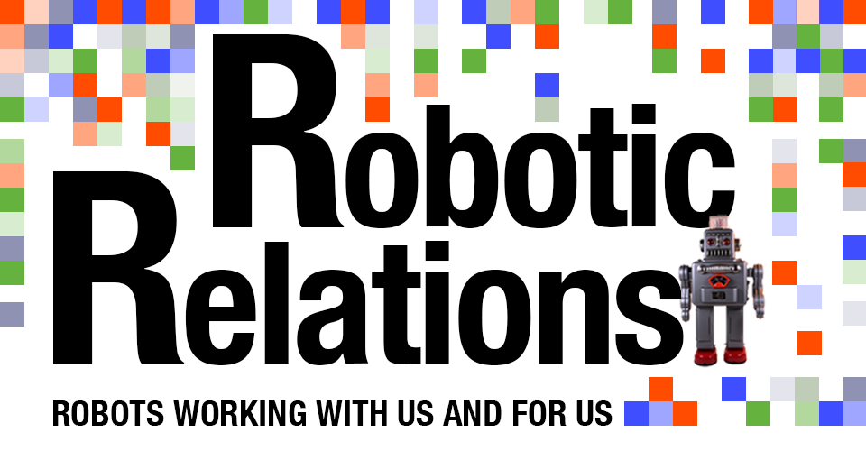
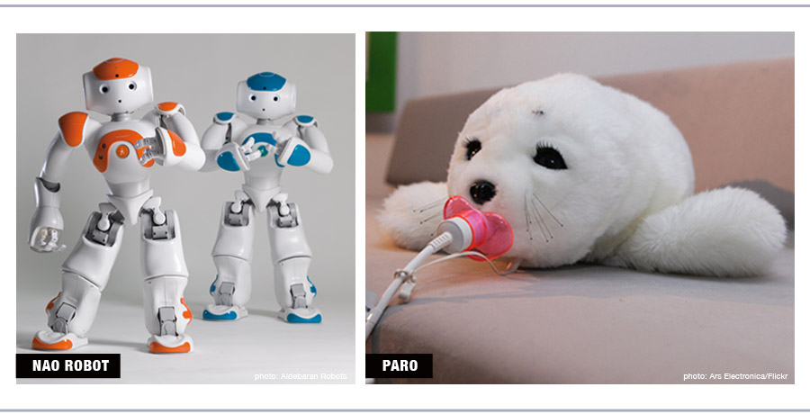

"Zombies, vampires, Frankenstein's monster, robots, Wolfman - all of this stuff was really popular in the '50s. Robots are the only one of those make-believe monsters that have become real. They are really in our lives in a meaningful way." -Daniel H. Wilson, author and robotics expert
For a generation of Jetsons fans, Rosie the Robot was much more than a maid - she was a beloved member of a popular futuristic family. Her creators had envisioned a world where robots were vital to daily life.
While our cars may not fly and our cities don't float, Hanna-Barbera was definitely onto something. Today's robots embody the spirit of Rosie - they can be fun, useful and efficient. Over the last few decades, robots have made playtime a more technological experience and have begun to help humans with work and do tasks that people cannot. They can also help improve quality of life by providing therapeutic benefits and more.
In the nineteenth century, a Japanese inventor created mechanical toys that could fire arrows and serve tea. Two centuries later, with a new availability of powerful technology, the push toward modern-day robots began.
American companies embraced the excitement and started producing basic tin robots in bulk. Robert the Robot, whose crank-operated remote was cutting-edge in the 1950s, had eyes that lit up and could speak on command. This technology, however, pales in comparison to the robotic toys on the market today.
"If you give [a robot] a little bit of affect or expression, and that expression is released in an appropriate way when you do something, you will impute and attribute all kinds of cognitive properties to that thing," said Professor Malcolm MacIver, a robotics expert at Northwestern University. If robots are programmed to react in emotionally salient ways, it drives users to project a personality onto them, strengthening the bond between human and robot.
It is no coincidence, then, that today's generation of toy robots relies heavily on expressions of emotion. Furby hit the market in 1998, and in the first year of production 1.8 million units were sold. In the following year, that number jumped to 14 million. Consumers went wild over this wide-eyed, furry little creature that could interact and learn. Over time, the Furby, whose native tongue is known as "Furbish," is able to learn English through human interaction. "I think people are intrigued with anything that is an automatic copy of either a human or an animal," MacIver said.
But the capabilities of Furby, built off of a single motor, are limited, and since its release in 1998, children have learned to expect more from their toys. In 2006, Caleb Chung, the co-creator of Furby, designed a more advanced kind of toy that reflected the technological advancements of the day. Pleo, a baby dinosaur with sensors, computers and cameras, contains technology that has the potential to become an integral part of the future of playtime.
Chung modeled Pleo after a young Camarasaurus and, just like a real animal would, the toy develops through different life stages, learns through behavior, and expresses unique emotions based on how he is feeling or handled.
Pleo has chin, leg, rear, shoulder and head sensors that allow him to feel, as well as speakers and microphones that allow him to speak and hear.
In his TED Talk, Chung said, "They have forty sensors all over their body, they have seven processors, they have fourteen motors...but you don't care do you? They're just cute! That's the idea!"
At the end of the day, it's all about how users interact with the technology. "For me, I think about a kid being able to see some complicated device and actually be able to control it and feel some sense of mastery there. And for it to interact with a person in a way that it drives some kind of conversation or narrative," MacIver said.
Robots like Pleo have the potential to change up playtime. Not only do they bring technology into kids' lives at an early age and in an accessible way, but they also help children appreciate humanity and the idea that we are more than machines.
"A lot of times when we think about intelligence, we think about the brain, and I think one of the lessons of robotics is that it's the whole package," MacIver said.
But costing over $400, the robot doesn't come cheap. The interactive emotional experience they can provide, however, is unique. Imagine a little girl's tea party with robotic company that actually talks back.
As far as the future of toy technology is concerned, designers are inventing new robotics that challenge conventions and standards. The primary obstacle keeping these advanced robotic toys from gaining mass popularity, however, seems to be price. But every technological development unlocks new potential for these toys and brings developers' dreams one step closer to becoming a reality.
Robots first appeared in large numbers in factories and were created to perform tasks classified under "the three Ds": dull, dirty and dangerous. These early factory robots were simple in design. Their tasks were repetitive and required very little intelligence on the part of the robots.
The first industrial robot used in the US was essentially a large mechanical arm. It was invented in Sweden, and was first installed in the US in 1961 at a General Motors plant in Trenton, N.J. The robot, called Unimate, sequenced and stacked hot pieces of diecast metal. Human workers would then craft this metal into hardware for automotive interiors, such as window and door handles.
Isolated from the factories' human workers, if a person came into their designated area, early factory robots would shut down for safety reasons. They were simply too dangerous for humans to be around.
"People want more from [robots]," said Dmitry Berenson, a professor at Worcester Polytechnic Institute and member of the Robotics Engineering Program. "The robots need to be able to be reprogrammed really quickly. People are also really pushing for robots to be able to work with people."
The role of factory robots has changed dramatically since their inception. Manufacturers making products that are constantly being upgraded - think about the many generations of iPhones, for example - need robots that can be reprogrammed easily so as to avoid the production delays that occur when outdated models must be replaced.
The hope for cooperation between humans and robots extends beyond the factory, and robots that perform practical tasks are slowly integrating themselves into life at the office and at home.
"I think we're at a cusp now," said Kevin Lynch, professor of Mechanical Engineering at Northwestern University. "Some robots are finding their way into our homes. Children now are primed to have robots become part of their lives."
Berenson noted that Roomba, the robotic vacuum, was the first commercially successful robot outside of factories. While not as popular as Roomba, there are also robots made specifically to help elderly and disabled people with tasks like picking up a fallen remote.
Some robots, however, will never work with humans; rather, they are built to do jobs deemed too dangerous for people. Survey Runner, a task-oriented robot created by TOPY industries in 2012, was made to explore the Fukushima Daiichi nuclear power plant in Japan after its meltdown following an earthquake in 2011. Ultimately, its main purpose was to test radiation levels and determine whether the plant was safe for workers to re-enter. The robot is unique in its ability to climb stairs, which allowed it to maneuver through the factory without direct human assistance.
If people are going to accept robots as an integral part of the workplace, Berenson noted, it will be because of their ability to perform tasks as or more effectively than humans. "Robots, like any other technology, will have to prove their usefulness," he said.
But other robots operate in an entirely different sphere of influence. Just like toy robots can partner with children in play, this third type of robot can partner with people - both young and old - to make their lives better on a more individual level. These robots can be found assisting those who need therapy or hospital care or who face difficulties that can make life a little more challenging.
Phobot aims to help children combat certain phobias. He is afraid of other robots and specific objects, but as he is exposed to increasingly larger robots, he learns to face his fears and, as a result, can help children learn how to face their fears, too.
A humanoid robot called NAO stands 23 inches tall and works with autistic children to enhance their social skills. NAO can talk to the children, but has no facial expressions - a benefit because, for children with autism, changing facial expressions can seem threatening, said Mirella De Rossi, Marketing Operations Manager for Aldebaran Robotics, which makes and sells NAO.

Robots have also proved useful for the aging population and have been able to lend a hand in hospital settings.
"Our society is aging, getting older. Assisted nurse robots are playing a larger role in the home," said Kevin Lynch, professor of mechanical engineering and co-director of the Northwestern Institute on Complex Systems. "There are health care robots that carry things from room-to-room, more [robotic] prosthetics."
In 2002, Guinness World Records lauded a Japanese-created robotic baby harp seal called PARO as a therapuetic tool.
A 10-month clinical study conducted among male dementia patients at the Veterans Affairs Palo Alto Health Care System suggested that interactions with the furry seal robot increased positive moods and behaviors in those patients.
PARO's internal workings let it behave like a real animal, said Christine Hsu of PARO Robots U.S. Inc. Depending on how its owner interacts with it, a PARO robot will adopt distinctive behaviors, she said. The robot makes sounds, and sensors allow it to tell what is happening in its surroundings.
PARO Robots U.S. Inc. introduced the robot to the U.S. market in 2009, and it is making its way into health care facilities around the country. It is also used in Europe and Japan.
But why a seal? People generally have little prior knowledge about seals, said H.F. Machiel Van der Loos, associate professor, department of mechanical engineering, University of British Columbia. "We have no built-in models of seals-at least most of us don't-whereas we do have pretty well-developed models of cats and dogs," Van der Loos said.
As another advantage, PARO can enter sites that prohibit real animals, said Jason Barcomb of Hamden Rehabilitation and Health Care Center in Hamden, Conn.
Alice Amro has used PARO with elderly dementia patients at Passages Hospice and Passages Palliative Care, headquartered in Lisle, Ill. She said she has seen reduced depression and anxiety when patients interact with the robot. It also encourages them to engage with the outside world, she said. One female patient was "all curled up" and seldom responded to her surroundings, but when she was around PARO, everything changed.
"All of a sudden she's sitting up a little bit better, she's reaching out, she's smiling," said Amro, a licensed clinical social worker and certified robot therapist. Clearly, these robots are doing something right.
Dementia Care Consultant Randy Lee Griffin has devised a certification training program to teach professional caregivers how to use PARO with people who have Alzheimer's disease and related dementias. She said caregivers shouldn't write off PARO and other innovative health care options that have the potential to make life better for these individuals.
"There are so many different modalities that we need to be open to," Griffin said.
Therapeutic robots used to be a thing of the future, but for people who need some healing, they might be just what the doctor ordered.
Whether they're playing, working, or helping to improve people's quality of life, robots are in our lives, they are here to stay, and their presence hints at a future of increasing relations with humans.